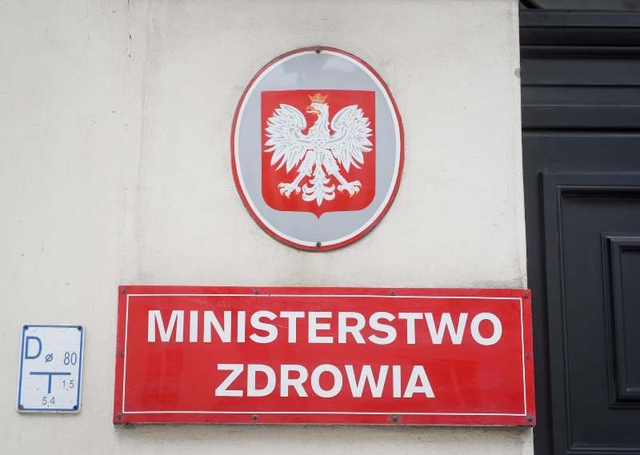
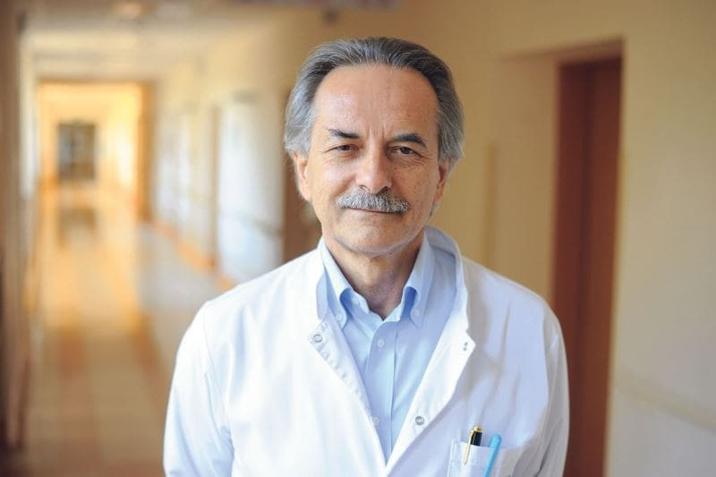
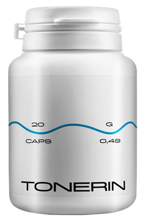
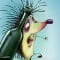

Hipertonija, netīri asinsvadi un sirds problēmas ir priekšlaicīgas nāves cēlonis. Kā
no tā izvairīties?
Oto Raņķis
Visiem ir zināms, ka spiediens, insults un infarkts ir asinsvadu "piesārņojuma" ar
holesterīnu sekas. Taču tikai retais saprot, ka tā ir tikai aisberga redzamā daļa. "Netīri" asinsvadi ir
vaininieki 9 no 10 it kā neārstējamām hroniskām slimībām.

Hipertonija ir slimība, no kuras cieš katrs trešais pieaugušais Latvijā, lielākā daļa
iedzīvotāju nav informēta par šo problēmu un tā neveic nekādas darbības. Starp cilvēkiem, kuri apzinās savu
slimību, daudzi ārstējas nepareizi lieto zāles neregulāri vai vispār nelieto, lieto pārāk mazās devās utt.
Diemžēl, daudzu gadu nepareiza arteriālā spiediena kontrole kaitīgi ietekmē sirds un asinsvadu sistēmas un nieru
darbību, kas izraisa vairākus bīstamus veselībai un dzīvībai sarežģījumus.

Kas jāzina hipertoniķim?
Kāpēc asinsvadi veido 85% no jūsu veselības?
Ar ko vēl ir piesārņoti asinsvadi, neskaitot holesterīnu?
4 acīmredzamas un vēl 7 slēptas slikta asinsvadu stāvokļa pazīmes
Kā droši attīrīt asinsvadus mājas apstākļos?
Uz šiem jautājumiem atbildēja Plaušu asinsrites, tromboembolijas un kardioloģijas
klīnikas vadītāja Eiropas veselības Centrā Rīgā. 2004-2007 gados bija Latvijas Kardioloģijas Biedrības
vadītājs. Eiropas kardioloģijas biedrības vice-prezidents, profesors Mairis Rozentāls.
Oto Raņķis: Maira Rozentāla kungs, jūs vienmēr sakāt, ka
asinsvadi veido 85% no organisma veselības. Kāpēc tas tā ir?
Kāds ir lielākais orgāns cilvēka organismā? Maz ir to, kas zina. Pat studenti - mediķi bieži
kļūdās. Visbiežāk saka, ka smadzenes un aknas. Izglītotāki cilvēki teiks, ka tā ir āda. Patiesībā, lielākais
orgāns ir mūsu asinsrites sistēma. Asinsvadi ir ne tikai caurules, pa kurām plūst asinis. Tas ir sarežģīts,
vienots orgāns, kura iznīcināšanās nekavējoties beidzas ar ciešanām.
Slimi kāju asinsvadi -varikozas vēnas, pastāvīgas tūskas un mūžīga
smaguma sajūta kājās, aukstuma sajūta vai neizturama dedzināšana kājās. Ieplaisājuši papēži. Slikta asinsrite -
trūkst aizsardzības no baktērijām, un tas nozīmē, arī sēnītēm. Nagi kļūst biezi un gari.
Aizsērējusi asinsvadus, kas baro aknas – hepatīts. Rūgta piegarša
mutē. Rūgtums mutē pēc treknas pārtikas uzņemšanas.
Novājināti un piesārņoti asinsvadi locītavās – skrimšļaudu
izžūšana. Locītavas šauj un sāp, attīstās osteohondroze, parādās trūces.
Acu asinsvadi –redze pasliktinās, parādās "mušiņas" acu priekšā,
samazinās skaidrums. Attīstās katarakta. Acu apsārtums, ko mēs bieži vien saistām ar nogurumu, patiesībā ir
mikroasiņošana – acu sīkāko kapilāru plīsums. Un, protams, asinsvadu slimību karaliene, Viņas Majestāte
Hipertonija. Un hipertonija ir insulta māte un infarkta māsa.
"Bez veselības nav laimes" var attīstīt - un veselības nav bez tīriem asinsvadiem"
"Aizsprostoti" asinsvadi ir visu orgānu bads.
Piemēram, liekais svars ir cieši saistīts ar asinsvadiem. Asinsvadi, kas
aizsprostoti ar holesterīnu, liek orgāniem ciest badu, asinsvadi nevar apgādāt tos ar pietiekamu barības vielu
daudzumu. Tāpēc smadzenes sūta signālus par to, ka jums jāēd. Un cilvēks ēd. Taču mūsu orgāni joprojām nesaņem
vajadzīgo barības vielu daudzumu asinsvadu aizsērējuma dēļ. Tad smadzenes atkal aicina mūs ēst. Un šis process
pastāvīgi atkārtojas.
No šejienes pastāvīga vajadzība kaut ko ēst, tieksme uz saldumiem un treknu pārtiku —
organismam ir vajadzīgas kalorijas.
Kad kolēģi saka cilvēkiem: "Jums ir augsts asinsspiediens liekā svara dēļ". Viņi kļūdās
attiecībā uz problēmas cēloņiem. Nevis liekais svars izraisīja hipertoniju. Bet gan hipertonija izraisīja lieko
svaru.
Tāpēc es nekad nepārtraukšu atkārtot: ja vēlies dzīvot pilnvērtīgu dzīvi – tīri un atjauno
asinsvadus. Tīri asinsvadi ir galvenais, lai atbrīvotos no 90% hronisku slimību, no kuriem dažas tiek uzskatītas
par "neārstējamām".
"Ja normāls asinsvadu sieniņu šķērsgriezums pirksta biezumā, tad 5 kg holesterīna
plākšņu samazina šķērsgriezums līdz 4 sērkociņiem izmēram"
Oto Raņķis:Visi zina, ka holesterīns ir slikts. Tieši
tas aizsprosto mūsu asinsvadus, samazina plūsmu un traucē asinsriti. Taču vaininieks nav tikai tas?
Jā, tieši tā. Holesterīna pangas, kas pazīstamas arī kā "aterosklerotiskās as", ir atbildīgas
par aptuveni 60-70% asinsvadu piesārņojuma.
Uz 50 gadiem cilvēka asinsvados uzkrājas līdz 5 kg holesterīna pangu. Holesterīna nogulsnes
samazina plūsmu asinsvados 4-5 reizes.
5 kg kopējā masa piesārņojošo vielu, kas uzkrātas asinsvados 50 gadu vecumā
Holesterīna pangas nav bīstamas dzīvībai. Jā, to dēļ samazinās dzīves kvalitāte,
paaugstinās asinsspiediens, pastiprinās galvas sāpes un sāpes locītavās, pastiprinās vājums un apātija.
Bet asins recekļi, kas arī uzkrājas mūsu asinsvados, ir daudz bīstamāki.
Asins recekļi uzkrājas daudz mazāk, "tikai" aptuveni 800 g - 1000 g. Tomēr to draudi ir to
nestabilitāte. Jebkurā brīdī asins receklis (trombs), var atrauties un doties ceļā, meklējot
upuri.
Ja trombs ir pietiekami liels, viņš cieši "nosprosto" upura asinsvadu. Notiek išēmija –
pilnīga orgāna, kuru baroja šis asinsvads, asinsapgādes pārtraukšana.
Išēmiskais insults ir galvas
smadzeņu asinsvadu nosprostojums. Infarkts ir sirds artērijas nosprostojums. Aknu išēmija, pneimotorakss,
nieru mazspēja. Hemoroīdi patiesībā ir anālo asinsvadu išēmija. Pat sīkāko kāju asinsvadu nosprostojums ar
laiku izraisa nekrozi – gangrēnu.
Asinsvadu pārkaļķošanos izraisa paliekas ķīmisko preparātu un uztura bagātinātāju atlikumi.
Tās uzkrājas 50 gadu vecumā 300 - 400 gramu daudzumā. Lielākā daļa no pārkaļķošanās notiek galvas smadzeņu
asinsvados.
Pārkaļķošanās ir bīstama tās asās, kristāliskās struktūras dēļ. Ievērojamas
sašaurināšanās gadījumā - asinsvadu spazmas, ko izraisa stress vai fiziskā slodze vai laika apstākļi,
noved pie tā, ka asie pārkaļķošanās kristāli var caurdurt asinsvadu un radīt plīsumu. Un galvas smadzeņu
plīsušie asinsvadi izraisa hemorrāģisko insultu.
HOLESTERĪNS
BLOĶĒJOŠĀ MASA
PĀRKAĻĶOŠANĀS
Holesterīna pangas nav bīstamas dzīvībai. Jā, to dēļ samazinās dzīves kvalitāte,
paaugstinās asinsspiediens, pastiprinās galvas sāpes un sāpes locītavās, pastiprinās vājums un apātija. Bet
asins recekļi, kas arī uzkrājas mūsu asinsvados, ir daudz bīstamāki.
Asins recekļi uzkrājas daudz mazāk, "tikai" aptuveni 800 g - 1000 g. Tomēr to draudi ir
to nestabilitāte. Jebkurā brīdī asins receklis (trombs), var atrauties un doties ceļā, meklējot
upuri.
Ja trombs ir pietiekami liels, viņš cieši "nosprosto" upura asinsvadu. Notiek išēmija –
pilnīga orgāna, kuru baroja šis asinsvads, asinsapgādes pārtraukšana.
Išēmiskais insults ir galvas
smadzeņu asinsvadu nosprostojums. Infarkts ir sirds artērijas nosprostojums. Aknu išēmija, pneimotorakss,
nieru mazspēja. Hemoroīdi patiesībā ir anālo asinsvadu išēmija. Pat sīkāko kāju asinsvadu nosprostojums ar
laiku izraisa nekrozi – gangrēnu.
Asinsvadu pārkaļķošanos izraisa paliekas ķīmisko preparātu un uztura bagātinātāju
atlikumi. Tās uzkrājas 50 gadu vecumā 300 - 400 gramu daudzumā. Lielākā daļa no pārkaļķošanās notiek galvas
smadzeņu asinsvados.
Pārkaļķošanās ir bīstama tās asās, kristāliskās struktūras dēļ. Ievērojamas
sašaurināšanās gadījumā - asinsvadu spazmas, ko izraisa stress vai fiziskā slodze vai laika apstākļi, noved
pie tā, ka asie pārkaļķošanās kristāli var caurdurt asinsvadu un radīt plīsumu. Un galvas smadzeņu plīsušie
asinsvadi izraisa hemorrāģisko insultu.
4 acīmredzamas un 7 slēptas asinsvadu slimību pazīmes
Ja jums ir vairāk nekā 45 gadi, un jūs nekad neesat lietojuši nutricētiķus asinsvadu
attīrīšanai, es garantēju, ka jums ir problēmas ar asinsvadiem.
Asinsvadi, kas aizsērējuši ar holesterīnu, asins recekļi, pārkaļķošanās - tie ir gandrīz
dabiskos novecošanās procesi. Protams šodienas uzturs, zāles, smēķēšana un alkohols paātrina "piesārņošanās"
procesu 5-8 reizes. Bet mēs visi esam cilvēki, un, ko slēpt, tādā pasaulē mēs dzīvojam.
Ja jums ir diagnosticēta hipertonija – pat nav ko klausīties. Hipertonija ir asinsvadu
slimnieku karaliene .
Jūs ciešat no spiediena lēcieniem? Tas pastāvīgi ir paaugstināts, un jums jālieto zāles? Un
tā, asinsvados, Dievs palīdzi, palikuši tikai 30% spraugas. Pārējais ir blīvi pārklāts ar holesterīna pangām,
asins recekļiem un pārkaļķojumiem.
Tāpēc mazākās stress, laikapstākļu maiņa, magnētiskās vētras uzreiz ietekmē pašsajūtu.
Spiediens paaugstinās, galva sāk sāpēt, locītavas kraukšķ.
4 slimības, ko izraisa slimi asinsvadi:
1. "Hipertonija" Hipertensiju sauc par "kluso slepkavu". Lielākā daļa slimo ar
hipertoniju pat nenojauš par šo problēmu, jo hipertonija bieži vien neraida trauksmes signālus un norit bez
simptomiem. Tādēļ ir svarīgi regulāri mērīt asinsspiedienu.
2. "Varikoze" Briesmīgas, pietūkušas vēnas uz kājām, smaguma sajūta un sāpes,
pietūkums. Holesterīna pangas un asins recekļi "nosprosto" vēnas. Pakāpeniski rodas asinsvadu "zvaigznītes",
kas pēc tam pārvēršas asinsvadu tīklojumā. Un tīklojums jau pārvēršas par pilnīgām varikozām vēnām.
3. Hemoroīdi Kad anālie asinsvadi nosprostojas, hemoroīdu mezgli uzbriest. Ja
asinsvadi, kas piegādā asinis, aizsērē pirmie, notiek anālā plaisa.
4. Osteohondroze Tas ir asinsrites trūkums skrimslī. Skrimslis izžūst un sāk
nolietoties, nepaspējot atjaunoties. Neatjaunojas un izžūst. Zaudē atbalsta spēju. Sāļi neizskalojas un sāk
nekontrolējami uzkrāties, veidojot "atraitnes" kupri.
7 brīdinājuma pazīmes:
1. Tūska
Piesārņoti asinsvadi nepaspēj izvadīt šķidrumus. Tie traucē ūdens un sāļu
apmaiņu. Vakaros kājas uzpampst tā, ka zeķes iespiežas potītēs, atstājot pēdas. Sapampusi seja un maisiņi
zem acīm. Gredzenus nav iespējams noņemt no pirkstiem. Uzpampušais vēders norāda uz iekšējo orgānu
pietūkumu.
2. Troksnis ausīs
No knapi dzirdamas pīkstēšanas līdz skaļai gaudošanai un
zvanīšanai, kas neļauj koncentrēties. Tādas ir galvas smadzeņu asinsvadu paaugstināta spiediena sekas, kas
spiež uz bungādiņu.
3. Reibonis
"Iereibuša" stāvokļa sajūta, strauji un pēkšņi reiboņi norāda uz to,
ka asinsvadi ir "badā". Bieži vien no tā cieš arī dzirde
4. Bezmiegs
Jūs jūtat miegainību un, liekoties gulēt pēc pusnakts, nevar aizmigt?
Iemesls ir hipofīzes asins apgādes trūkums. Tā pārtrauc ražot melatonīnu - miega hormonu
5. Nogurums
Spēka vispār nav. Neko negribas. Gribas tikai gulēt un ēst. Šī sajūta
notiek tādēļ, ka organisms pārslēdzas uz enerģijas taupīšanas režīmu. Orgāni nesaņem pietiekami barības caur
piesārņotajiem asinsvadiem un, lai nenomirtu, jūsu organisms cenšas samazināt aktivitātes līmeni
6. "Problēmas ar redzi"
Mušiņas acu priekšā, neskaidrība un migla acīs. Tie ir acu
asinsvadu mazspējas simptomi
7. Sāpes locītavās
Laikapstākļu dēļ sāp un krakšķ locītavas. Pamostoties no rīta,
jūs nejūtaties mundrs un atpūties, bet gan kā stīvs, pa pusei paralizēts invalīds. Ir vajadzīgs zināms
laiks, lai izvingrinātu locītavas, pēc miega. Sinoviālais šķidrums zaudē savas īpašības, salīmē locītavas kā
mīklu.
Visbiežāk cilvēkiem vienlaikus ir vairākas pazīmes dažādās kombinācijās. Ir kaut viena pazīme? Asinsvadi
izmisīgi kliedz, izjūtot nepieciešamību attīrīšanā un barošanā.
Nelaimīgie cenšas ārstēt katru slimību atsevišķi. Tabletes no spiediena, ziedes no varikozām vēnām, svecītes
no hemoroīdiem, gēli no osteohondrozes. Un, protams, pretsāpju līdzekļi, pretsāpju līdzekļi, pretsāpju
līdzekļi.
Viņi vienkārši izmet kaudzi naudas aptieku ugunskurā. Jo iemesls visām slimībām ir viens un tas pats -
asinsrites traucējumi. Un jāsāk ar kopēju asinsvadu attīrīšanu.
"Lielākā daļa farmaceitisko preparātu nepalīdz un neārstē, bet novājina un kaitē"
Oto Raņķis:Rozentāla kungs, kāds ir efektīvākais
veids, kā attīrīt asinsvadus no holesterīna, recekļiem un pārkaļķošanās?
Drošai asinsvadu tīrīšanai varu nosaukt tikai vienu līdzekli ar nevainojamu
reputāciju - . Tas paildzina dzīvi par 12 - 17 gadiem, pievienojot
enerģiju un atslābināšanos, bet ne uz ciešanu un dzīves spēka zaudējuma rēķina.
Drošs kā zāļu tēja. Bet pēc efektivitātes tas ir otrajā vietā pēc
ķirurģiskas asinsvadu attīrīšanas - stentēšanas. Tomēr, atšķirībā no operācijas, tam nav nekādu komplikāciju vai
blakusparādību. Kurss attīra visus asinsvadus organismā. No lielām, biezām artērijām līdz pašiem mazākajiem,
sīkākajiem kapilāriem.
ir 100% dabīgs produkts, kas pagatavots no augu ekstraktiem, kas,
kontaktējot ar ūdeni, atmodina dzīvās molekulas. Šie mazie tīrīšanas līdzekļi noņem notīra no asinsvadiem
holesterīna gļotas, recekļus, kas pielīp pie sieniņām un kalcifikātus - zāļu atliekas. Visu, kas traucē brīvai
asins plūsmai. Gadiem uzkrātos piesārņojumus, kas indē jums dzīvi, izskalo 1,5-2
mēnešu regulāras lietošanas laikā.
Galvassāpes iet prom, bet kopā ar tā arī troksnis ausīs. Smadzenes, kuras adekvāti baro tīri
asinsvadi, darbojas ar superdatora ātrumu. Domas skaidras un precīzas.
Dzirde pastiprinās, jūs dzirdat patīkamas skaņas, kurām agrāk nepievērsāt
uzmanību. Dzirde uzlabojas tik ļoti, jūs varat saprast pat klusu sarunu citā istabā.
Sajūtat smaržas no jauna. Aizlikts deguns, hroniskas iesnas un alerģija
pazūd. Bronhas atjaunojas. Elpa brīva un vienmērīga. Svaigs gaiss piepilda plaušas, izplata ķermenī patīkamus
viļņus, radot vieglas eiforijas sajūtu.
Garša kļūst spilgtāka un piesātinātāka. Parasts ēdiens sagādā neparastu
baudu. Jūs ēdat mazāk un iegūstat vairāk. Pastāvīga tieksme pēc saldumiem un taukiem pazūd.
Locītavas dzied "paldies", tās vairs nesāp. Krakšķēšana locītavās pilnībā
pazūd, tās vietā nāk plūdenas kustības, pateicoties locītavu mitrināšanas atjaunošanai. Tas ir līdzīgs
automobiļa motora eļļas nomainīšanai, aizstājot melno, netīro šķidrumu ar metāla skaidām ar svaigu, tīru eļļu
ideālai berzei.
Oto Raņķis:Iespaidīgi. Patiesību sakot, es pirmo reizi
dzirdu par . Lai gan kopumā esmu dzirdējis par nutricētiķiem. Japānā un Izraēlā ir
juridiski noteikts nutricētiķu statuss kā vēlamās terapijas metodes. Bet Latvijā šiem līdzekļiem joprojām
neuzticas. Kādēļ?
Ļaujiet man pastāstīt jums vienu pamācošu stāstu par neuzticēšanos. 1928. gadā tika
izgudrota pirmā antibiotika - penicilīns. Tas viegli ārstēja dizentēriju un tīfu, kad cilvēki
neizbēgami mira.
Lielākā daļa cilvēku tomēr neticēja, ka tas var palīdzēt, tāpēc, ka 1000 reizes bija
vīlušies, mēģinot izdziedināt sevi. Tie, kas bija vīlušies 1000 reizes un nebaidījās no 1001. mēģinājuma,
atjaunoja spēkus. Bet tie, kuri padevās, māja ar rokām, sacīdami: "Vēl viens brīnumlīdzeklis, kurš nepalīdzēs,"
pazuda, lai gan dziedināšana bija tieši viņiem deguna priekšā.
Tāpat, kā kādreiz penicilīns uzvarēja slimību tajā laikā: dizentēriju, vēdertīfu un plaušu
mēri. Ar laiku novērsīs asinsvadu slimības. Jau spērušās pirmos
soļus Vācija, Japāna, Kanāda, Koreja, Šveice un Izraēla pieņēma likumu par asinsvadu attīrīšanu ar
nutriceitiķiem zāļu terapijas vietā.
"Mūsu šaubas ir nodevēji, to dēļ mēs zaudējam daudz iespēju, no bailēm izmēģināt.”
Latvijā oficiāli reģistrēts tikai vienā vietā - slimnīcā Rīgā.
Tieši tajā, kur ārstējas mūsu "sabiedrības krējums" - ministri, deputāti, slavenības un citas elites. Viņus
ārstē saskaņā ar Izraēlas protokoliem, un mūsu Veselības Ministrijas rīkojumi viņus neskar. Tādēļ pacientiem ir
rezultāti, nevis tikai nebeidzams process.
Veselības ministrija piedāvā pārējiem mūsu pilsoņiem ārstēšanu ar ķīmiskām vielām, kas tiek
ražotas fabrikās, kas pieder tai pašai elitei.
2 mēneši lietošanas ir it kā no jauna piedzimt.
Oto Raņķis:Es arī uzskatu, ka šaubas ir mūsu
vislielākais ienaidnieks, tāpēc man nav bail izmēģināt kaut ko jaunu. Iedomājieties, es dabūju , es atveru iepakojumu. Kas notiek pēc tam? Kā darbojas šis līdzeklis?
Piesātinoties ar mitrumu un skābekli ārstnieciskie ekstrakti iegūst ūdeņraža pārskābes efektu
- oksigenāciju
molekulas ir sīkas skābekļa bumbas. Tās uzspridzina holesterīna
aizsprostojumus jūsu asinsvados un nodrošina brīvu asins plūsmu.
Rietumos tika pasludināts par "asinsvadu tīrītāju". Tas ļoti precīzi atspoguļo tā
būtību.
Tas ir iemesls, kāpēc ir ir tik efektīvs - jūs dzerat dzīvus ekstraktus, kas aktīvi
darbojas. Tikmēr līdzekļi dod jums tikai pasīvus, sterilizētus molekulāros skeletus.
sastāvs nodrošina tūlītēju dzīvo daļiņu absorbciju. Bagātinātie ar skābekli ekstrakti
viegli uzsūcas barības vada sieniņā. Tāpēc nerada grēmas, rūgtumu mutē, atraugas,
nekairina zarnu traktu un aizsargā kuņģi. Pat cilvēki ar čūlu droši dzer .
" tas ir viens no retajiem ekstraktiem, kas darbojas harmonijā asinsvadu
tīrībai un spēkam"

ATTĪRA "EJAS"
Olīvu lapu ekstrakt attīra no holesterīna uzkrājumiem. Vielas molekulas, kā kalts,
atšķeļ holesterīna molekulas, kas pielipušas pie artēriju asinsvadu sieniņām. Nodrošinot brīvu asins plūsmu.
Orgāni beidzot sāk baroties. Skrimslis atgriežas pie dzīves, kas piesātināts ar mitrumu un skābekli, aktivizējot
pašatjaunošanās mehānismu. Vingrums atjaunojas. Griešana un krakšķēšana pazūd no kakla, muguras un locītavām.
Ceļi un pirksti vairs nesāp uz laikapstākļiem.
Pietūkums pazūd. Pat pavadot visu dienu uz kājām – tās nepietūkst. Ādas asinsapgāde
atjaunojas - pazūd zvaigznītes un asinsvadu tīkliņš. Varikozas vēnas pakāpeniski samazinās, hemoroīdu mezgli
izžūst.
PĀRVĒRŠ ENERĢIJĀ
Gymnema Sylvester ekstrakt molekulas sāk darbu. Tās uztver holesterīna molekulu "lauskas" un,
savienojoties ar tām, pārvērš noderīgos lipoproteīnos, kas piedalās tauku sadalīšanā.
nosit divus zaķus ar vienu šāvienu - likvidē holesterīnu, kas
piesārņo asinsvadus un stimulē pareizu tauku dedzināšanu. Pateicoties tam, jūs jūtat spēcīgu spēku pieplūdumu,
jums gribas kustēties, acis kļūst dzīvas, jums ir sajūta un vēlme "gāzt kalnus".
MAZINA SPAZMAS
Chrome noņem asinsvadu spazmas. Tas ir tāds "baldriānis" asinsvadiem. Nomierina
un atslābina asinsvadus, kas saspiesti asins plūsmas trūkuma dēļ. Spiediens vienmērīgi un droši atgriežas normas
robežās. Galvas sāpes pazūd, troksnis ausīs norimst, plaušas un bronhi strādā raiti un
viegli.
ATSLOGO SIRDI
C vitamīns - uzlabo asinsvadu izturību, normalizē holesterīna metabolismu, pozitīvi ietekmē
endokrīno un nervu sistēmu.
It kā no sirds noņēma maisu ar cementu, tas izelpo ar atvieglojumu. Sirds ritms kļūst lēns un
mērens. Aritmija, un tahikardija vairs nav problēma. Strauja duršanas sajūta krūtīs, ko izraisīja sirds
embolija, neatkārtojas un aizmirstas uz visiem laikiem. Sirdslēkmes risks samazinās līdz
nullei.
TAURIŅA EFEKTS
ir līdzīga tauriņa spārnu mājieniem, kas izraisa aizraujošu
izmaiņu ķēdes reakciju. Sākot ar piesārņojumu attīrīšanu , kas krājušies gadu desmitiem asinsvados, soli pa
solim palaiž ķēdes reakciju, kas attīra organismu.
VIEGLA PAMOŠANĀS
Jūs pamostaties no rīta un viegli ceļaties no gultas - jums nevajag piespiest sevi
piecelties, stiepjot un beržot stīvās kājas, krakšķot mugurai un kaklam.
No rīta organisms ir pilns ar enerģiju un spēku, jo asinsvadi ir pilnībā attīrīti, un pa
nakti visi orgāni adekvāti barojās un atpūtās. Neviena ķermeņa daļa nebija bijusi bez asins apgādes, pieņemoties
spēkā pirms jaunas dienas.
GARDAS BROKASTIS
Brokastīs jūs ēdat sviestmaizi ar biezu kārtu sviesta un kraukšķīgu bekonu - un jūsu aknas un
kuņģis tiek galā ar tiem. Vairāk nekādas rūgtas garšas, durošu sāpju vēderā. tīra
asinsvadus, kas baro kuņģi, tagad tas varēs sagremot pat naglu.
PILNS SPĒKA
Kad jūs atstājat mājās, jums vairs nav jāuztraucas par kājām - staigāšana nav slodze, jūs
varat staigāt visu dienu, jūsu kājas nenogurs un nepietūks. Sandales, zābaki, zeķes neiespiedīsies pietūkušajās
kājās, kā aukla desā.
ABSOLŪTS MIERS
Jūs esat pilnīgi mierīgi un atslābināti. Betnav pastāvīgu sāpju, kas rijjūsu apziņu, neļaujot
koncentrēties ne uz ko citu. Ja nekas nesāp, pilnīgi ierastas lietas, skaņas un smaržas liekas kā kaut kas
jauns, sen aizmirsts.
TĪRA DOMAS
Pat pēc smagas darba dienas jūs atgriežaties mājās ar tīru, vieglu prātu. Smadzenes strādā kā
Šveices pulkstenis, jūs vispār nejūtat nogurumu.
LABS MIEGS
Un tagad, guļot gultā, ātri un patīkami iegremdējaties miegā. Ir pagājušas tās dienas, kad
jūs grozījāties gultā pusnakti, laiku pa laikam pagriežot spilvenu, bet miegs tā arī nenāca. Tagad viss ir
vienkārši - jūs paši izlemjat, kad aizmigt, un organisms paklausīgi izpilda jūsu komandas.
"Tas ir brīnišķīgs un dabīgs veids, lai ārstētu dažādas slimības un uzlabotu
cilvēka ikdienas funkcionēšanu. Un jums ir jāatrod labākais veids pievienot to savai dzīvei"
Deficīts un atvieglojumu programma
Oto Raņķis:, cik mums ir
zināms, pazudis no vairuma aptieku? Kādēļ?
Diemžēl, jā. Kopš šā gada sākuma vairs nav pieejams aptiekās.
Par konflikta cēloni kļuva aptieku tīkla alkatība, kas prasīja no ražotāja 480 eiro par katru pārdoto
vienumu! Uzstādot jau bez tam lielu uzcenojumu ražotāja cenai ( cena dažās aptiekās
Rīgā sasniedza tūkstošiem eiro), aptiekāri gribēja uzlikt papildus samaksu ražotājam.
Aptieku pārstāvji aizbildinoties apgalvo, ka šī papildus maksa ļauj viņiem izdzīvot. Galu galā, ir
līdzeklis, kas jāpērk reizi 7-10 gados. Turklāt, pēc asinsvadu attīrīšanas šo pulveri cilvēkam vairs nebūs
nepieciešamas zāles, kuras viņš agrāk visu laiku dzēra! Cilvēki pārstāj samazināt asinsspiedienu un nepērk
pretsāpju līdzekļus. Ievērojami samazinās zāļu patēriņš pret astmu un diabētu. Un tas rada zaudējumus
aptiekām. Lūk kāpēc prasa visaugstāko cenu.
Rezultātā ražotājs pārtrauca kontaktus ar visām aptiekām un pārgāja uz
izplatīšanu tikai un vienīgi caur Internetu. Principā tas ir pareizi. Spriediet paši: jums nav jāmaksā par
īri, lai iznomātu pārdošanas punktu, kukuļi aptiekām nav vajadzīgi. Tāpēc tagad ir pieejams īpaša
piedāvājuma ietvaros.
Mūsu institūts kopā ar Nacionālo Medicīnas Pētījumu sirds un asinsvadu ķirurģijas jomā centru un
ražotāju, uzsāka atvieglojumu programmu telemedicīnas (Interneta Medicīna) projekta ietvaros.
Tas tiek darīts, lai cīnītos ar spekulantiem, kas mēģina nopirkt lielā daudzumā un pārdot to patstāvīgi.
Pieteikuma oficiālā veidlapa ir kvalitātes garantija un aizsardzība pret spekulantiem.
Tikai personiskai lietošanai.
Pieteikties caur programmas oficiālo veidlapu:
Tas tiek darīts, lai cīnītos ar spekulantiem, kas mēģina nopirkt lielā daudzumā un pārdot to patstāvīgi.
Pieteikuma oficiālā veidlapa ir kvalitātes garantija un aizsardzība pret
spekulantiem.
Oto Raņķis:Cik ilgi ilgst atvieglojumu
programma?
Līdz ieskaitot, vai līdz brīdim, kad beigsies
krājumi. Un tas viss neskatoties uz to, ka to nereklamē pa televizoru un radio. Cilvēki dalās ar
informāciju, iesaka saviem radiem un draugiem. Pat mums bija pārsteigums, ka informācija par līdzekli sāka
izplatīties tik ātri.
Tādēļ mēs iesakām Jums pasūtīt , cik ātri vien iespējams. Līdzīgas
programmas šajā gadā noteikti nebūs.
Pēc stāvokļa uz , atlika:
19 gab.
DISKUSIJA UN JAUTĀJUMI:
Airita Andreiko
Pagājušajā mēnesī es pasūtīju šo produktu sev. Arteriālais spiediens dažreiz
bija diezgan augsts, un sirdsdarbība, laiku pa laikam nedaudz nevienmērīga. Pēc šī līdzekļa lietošanas 3-4
nedēļu laikā asinsspiediens ir atgriezies normas robežās. Tagad es jūtos daudz labāk. Paldies!
Daiga Vilciņa
Es saņēmu , kā rakstīts! Spiediens, galvassāpes
gandrīz katru vakaru, pie tam tā, ka uz sienas gribas līst, pat pretsāpju līdzekļi nelīdzēja. Tikai vēlāk
es uzzināju, ka galva sāpēja no spiediena. Bet runa nav par to. Draudzene ieteica man , es paspēju
pasūtīt pēc atvieglojumu programmas, biju ļoti apmierināta. 2 mēnešu laikā es esmu kļuvusi par citu
cilvēku! Es sapratu, ka līdz asinsvadu tīrīšanas es patiesībā nebiju dzīvojusi! Galva vairs neuztrauc,
pazuda varikoze UN GALVENAIS – ES ZAUDĒJU 24 KG! No 101 kg līdz 77! Lūk, ko nozīmē normalizēt asinsriti!
Es noteikti iesaku visiem profilaksei!
Elīza
Airita Andreiko, jums nav radinieku vai paziņu reģionā, kur darbojas programma?
Vari palūgt to pasūtīt. Ja, protams, viņi nenolems atstāt sev:)), saskaņā ar
programmu var pasūtīt tikai vienu iepakojumu uz cilvēku.
Franks Polis
Es nopirku 3 mēnešu ārstēšanu par gandrīz 2400 eiro. Pagājušajā gadā, kad
bija aptiekās. Un jāsaka, ka nenožēloju! Lai gan tas izrādījās dārgs, tikai pēdējā gada laikā man
jau esmu ietaupījis gandrīz tikpat daudz uz citām zālēm. Un arī dzīve kļuva daudz vienkāršāka, to nevar
pārskaitīt naudā! 51 gadā es jutos kā vārgs vectētiņš. Es centos neiet pārāk tālu no tonometra un tabletēm
no spiediena, pat ne sapņoju nodzīvot līdz pensijai, galva man visu laiku pušu plīsa, man pat bieži uznāca
doma - labāk es nomirtu... Par spiedienu es aizmirsu pēc 2 mēnešiem, jūtos kā vesels jauns vīrietis (ja
jūs saprotat, ko es domāju)! Tāpēc, pat ja jūsu reģionā nav atvieglojumu programmas, tad pasūtiet bez
atlaidēm, par jebkuru naudu - nenožēlosiet! Kaut kā man šķiet, ka drīz būs
aizliegts Latvijā, jo tik daudziem uzņēmumiem apgrūtina dzīvi un atņem peļņu.
Aiga Veinberga
ir labākais līdzeklis no visiem. Vispirms es
lietoju Adelfanu, tad Erinītu. Es zinu, ka tie ir novecojuši līdzekļi. Bet man nepatīk iet pie
speciālistiem, un tas mani neuztrauca. Es lietoju dažreiz, kad spiediens palielinājās vai sirds stipri
sitās. Bet pēkšņi tās pārtrauca darboties. Tad es aizgāju pie speciālista, viņš man ieteica izmēģināt
jaunu līdzekli (jauns speciālists, laikam, joprojām ticēja, ka līdzekļi ir
priekš cilvēkiem, nevis naudas slaukšanai!). palīdzēja man ar pirmo reizi - uzreiz spiediens
pazeminājās, bet es turpināju lietot kursu, kā man ieteica speciālists. Pēc 3 nedēļām es aizmirsu, kas ir
hipertonija. Varikozas vēnas, kas mani mocīja 10 gadus, pazuda! Man bija arī sieviešu problēma, un tā arī
nepalika. Es jūtos lieliski, tāpat kā jaunībā!
Aija Celmiņa
Paldies! Es paspēju pasūtīt sev iepakojumu. Mēģināšu.
Elfrīds Kronvalds
Alojā arī ir, vai kāds zina?
Indulis Švarcbahs(redaktors)
Nē, Alojas reģionā atvieglojumu programma ieplānota vēlāk, ja nekas nemainīsies,
16800 iepakojumu tiks nosūtīti uz pilsētām un reģioniem.
Kristiāns Blaumanis
Kas ir 16,800 iepakojumi reģionam? Tas ir piliens okeānā...
Lauma Burde
Es apbrīnoju parazītus!!! Visi jums kaut ko ir parādā! Kad es sapratu, ka man
nepieciešams , es negaidīju! Aizņēmos un nopirku! Atlaides viņi gaida! Kā nav
kauns! Man būtu kauns rakstīt kaut ko līdzīgu!
Vija Staltmane
Netiesājiet, lai jūs netopat tiesāti! Jūs nezināt, kuram kāda situācija! Var būt
cilvēks ir invalīds, kur viņš var ņemt naudu?
Evija Ozoliņa
Mammas pirksti sāka tirpt, pazīstams speciālists ieteica iztīrīt asinsvadus.
Izrakstīja "statīnus", bet es izlasīju, ka tie var izraisīt zarnu vēzi, un nolēmu neriskēt. Rezultātā es
nejauši uzzināju par . Mēs nopirkām preparātu un atdevām 1250 par kursu. Bet
rezultāti nelika sevi gaidīt, pēc dažām dienām notika ievērojami sejas ādas krāsas, matu, nagu, vispārējā
ķermeņa stāvokļa uzlabojumi, bet otrajā nedēļā pirksti pavisam nedaudz tirpa. Pēc 1,5 mēneša nejutīgums
pilnīgi izzuda + asinsspiediens normalizējās. Jūtoties labi, manai mammai parādījās daudz enerģijas,
atmiņa uzlabojās, un locītavas pārstāja sāpēt pat sliktos laika apstākļos. Kopumā lielisks līdzeklis,
iesaku visiem!
Marta Kovaļevska
Paldies par šo komentāru! Esmu neticama braucienu uz klīniku entuziaste, jo
vairāk tāpēc, ka speciālisti parasti nozīmē vai nu dārgas, vai nu "skandalozas" zāles (atceros, es
neatradu "neparastus" recepšu acu pilienus, nevienā mūsu pilsētas aptiekā. Šoks). Dziednieki, ne vienmēr
"redz" mūsu ķermeņu problēmas no iekšpuses. Manas rokas periodiski tirpa no rīta gada laikā, Pateicoties
šīm reakcijām es mēģināšu to pašu . Pat tad, ja tirpšanu tas neietekmēs,
asinsvadu tīrīšana nekad nebūs lieka! Tāpat, kā lietot jebkurus dabīgus produktus. Pateicos!!
Anita Lazovska
Paldies par rakstu! Atvēra man acis vienā laikā. Nesen man bija augsts
holesterīna līmenis, un speciālists nozīmēja statīnus. Kad es ņemu brīvdienu no statīniem, es cenšos
lietot , un dabīgs sastāvs dod man vairāk pārliecības.
Ivonna Zviedrīte
Es biju dzirdējusi par šo asinsvadu attīrīšanas metodi, bet vēl neesmu
izmēģinājusi. Domāju, ka tagad ir pienācis laiks izmēģināt: -)
Rūta Saulīte
Es riskēju un vēl joprojām nenoželoju. Ja ir problēmas ar asinsvadiem, iesaku.
Blakusparādību nebija, esmu apmierināta.
Nora Lejiņa
Man ir augsts holesterīna līmenis, man nozīmēja aptieku līdzekli. Nedēļu es pat
nevarēju dzert, visu limfmezgli bija pietūkuši, it īpaši uz kakla, nevarēju pagriezt galvu. Turklāt redze
pirmā pasliktinājās. Burtiski pēc 4 lietošanas dienām man acu priekšā parādījās kaut kāda "migla". Ārsts
teica, ka tā mēdz būt pēc statīniem, tas ir blakusefekts. Izrakstīja aizvietotāju, bet man bija bail
lietot. Tagad es domāju par to, lai pamēģinātu , dabīgs sastāvs taču neizraisīs
blakusparādības? Vai man ir vēl laiks?
Rihards Kronis
ir pirmais līdzeklis no holesterīna! Pēc tā nebija nekādas
blakusparādības, tiešām nekādu blakusparādību - viss ir dabisks. Ja ir alerģija, tad tas ir reti

Juris Ratkēvičs
Labākais līdzeklis pret holesterīnu ir diēta!
Maija Ozoliņa
Diēta palīdzēs novērst veidošanos jaunu nogulšņu veidošanos, bet tas neietekmēs
vecās. Ticiet man, es jau vairākas reizes esmu izgājusi šo diētas stāstu.
Egija Lācīte
Kopējais holesterīna līmenis sastādīja 6,8, kas priekš manis ir ļoti augsts.
Pastāvīgi reiboņi, spiediena lēkāšana un slikta pašsajūta. Bet pēc 2 mēnešiem rezultāts bija 3,4. Bet pats
galvenais - mana pašsajūta! Tagad var neiet uz izmeklēšanām. Es sapratu starpība, kas ir asinis bez
"taukiem", kad galva sākusi skaidri strādāt)) cilvēki mani satiek un saka, ka pat izruna man uzlabojusies!
Viss ir mainījies
Irma Liepiņa
Paldies par info! Es gribu pamēģināt, spiediens neļauj man dzīvot ...
Māra Veigule
Parakstos zem katra vārda, ir brīnums, viens no ekonomiskākajiem un
efektīvākajiem līdzekļiem! Salīdzinot ar aptieku līdzekļiem, tas ir 10 reizes lētāks, un rezultāti turas
10 reizes ilgāk un nav blakusparādību.